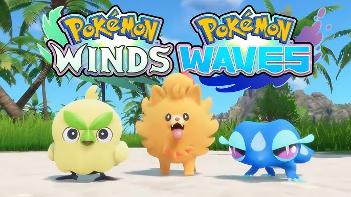

🌊 El Anuncio que Cambió Todo
El 27 de febrero de 2026, durante la transmisión especial del 30° aniversario de Pokémon, Game Freak reveló Pokémon Viento y Oleaje, los juegos de la décima generación. El mundo contuvo la respiración cuando aparecieron tres siluetas en la pantalla...
Indonesia, el archipiélago más grande del mundo con más de 17,000 islas, es la inspiración para esta región tropical. Los tres starters representan perfectamente la biodiversidad única de esta zona:
- 🌱 Browt - El pollito haba que simboliza la agricultura tradicional
- 🔥 Pombon - El perrito de fuego que representa lealtad y compañerismo
- 💧 Gecqua - El gecko acuático, símbolo de buena suerte indonesio
🎯 Nuestra Misión: Con solo 5 días desde el anuncio y basándonos en 26 años de historia Pokémon, 26,407 votos reales de encuestas y análisis predictivo avanzado, determinaremos científicamente cuál starter conquistará el corazón de millones de entrenadores.

Los tres starters de Pokémon Viento y Oleaje
📊 Nuestra Metodología de Análisis
Análisis Histórico
Estudiamos 9 generaciones de patrones de popularidad
Tendencias Actuales
Evaluamos el interés de búsqueda y engagement en redes
Encuestas Reales
Reddit Survey con 26,407 votos reales de jugadores (Gen 1-9)
Factor Cultural
Consideramos la conexión con Indonesia y popularidad animal
Simulación Monte Carlo
10,000 iteraciones para refinar probabilidades